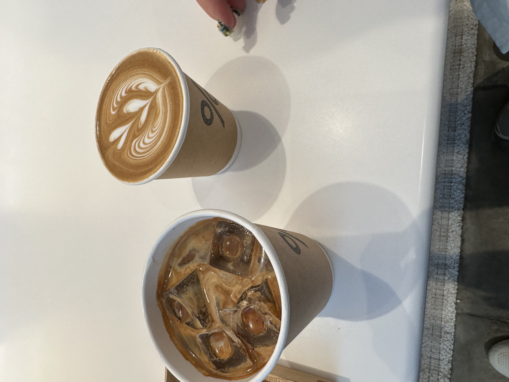
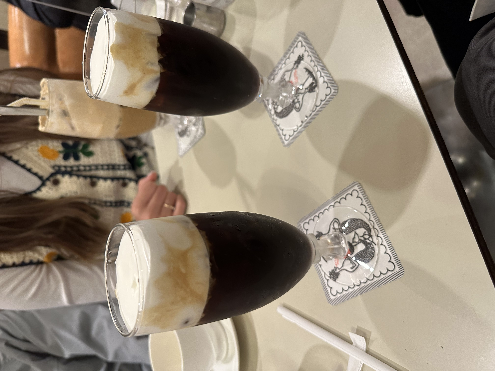
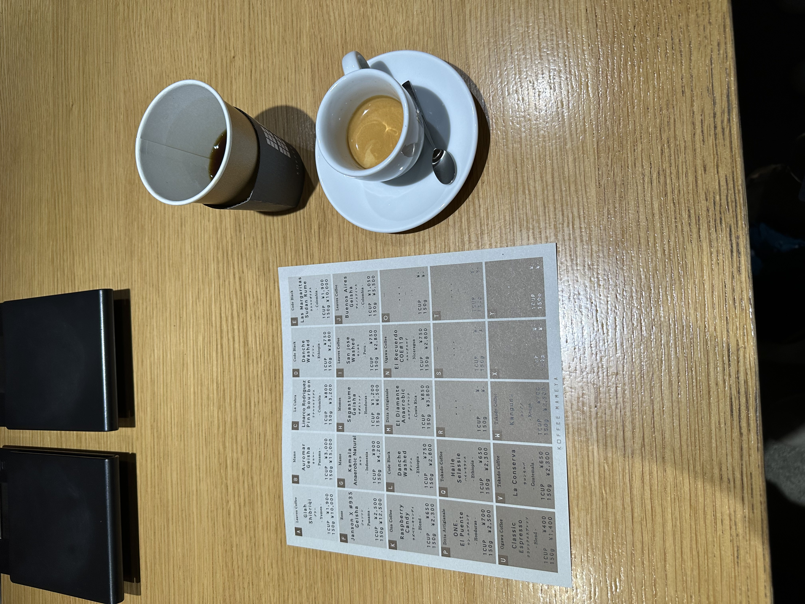
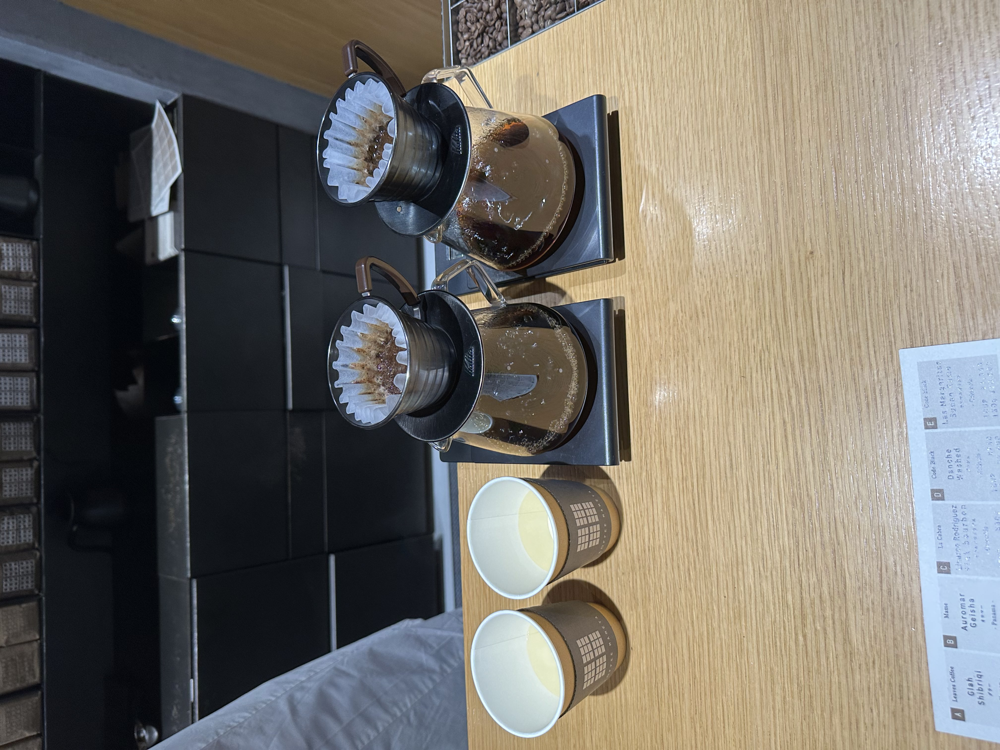

Welcome to my blog about my trip to Japan! I was there from April 3rd, 2023 to April 16th, 2023.

% Arabica in Kyoto

Cafe Paulista in Ginza


| Date |
Rough Itinerary |
April 3rd (arrive to Japan at 5:50pm) |
- Pick up JR passes then go to hotel.
|
| April 4 |
- Ueno Park
- Shimokitazawa
- Omotesando pt 1
- Dinner
|
| April 5 |
- Tsukiji fish market
- Exploring Shinjuku
- Omotesando pt 2
- Exploring Shibuya
- Dinner @ Furyu Ramen
|
| April 6 |
- Cafe Paulista Kissaten
- TeamLab Planets
- Sensoji Temple in Asakusa
- Arcades in Akihabara
|
| April 7 |
- Breakfast @ bills
- Imperial Palace
- Exploring/shopping in Ginza
- Omakase @ Sushi Komari
- Meiji Jingu Temple
- Omotesando pt 3
|
| April 8 (travel to Osaka) |
- Dotonbori
- Shinsaibashi
- Yakiniku dinner at Tayjimaya Ema
|
| April 9 (Kyoto pt 1) |
- Coffee @ % Arabica
- Kiyomizudera Temple
- Fushimi Inari Temple
|
| April 10 (Kyoto pt 2) |
- Sanjusangendo Temple
- Haein Shrine
- Kinkakuji Temple
- Ginkakuji Temple
|
| April 10 (Osaka & Nara) |
- Nara Park
- Todaiji Temple
- Shopping/dinner @ Shinsaibashi
|